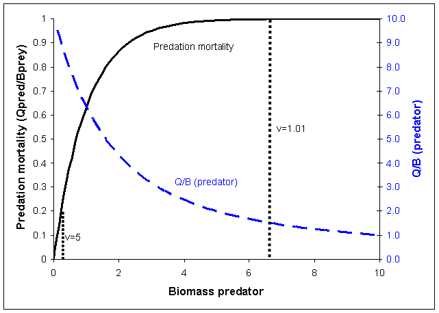
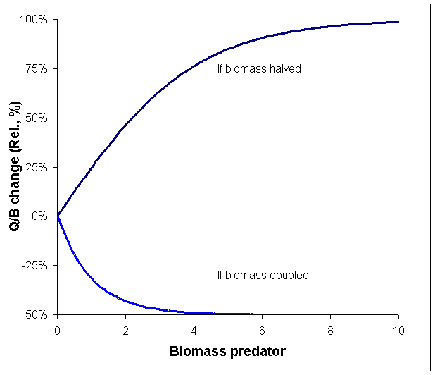
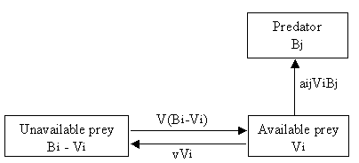

One of the most important features of Ecosim is its ability to allow exploring the implications on system dynamics of different views of how the biomass of different groups in the ecosystem is controlled. The two extreme views are ‘predator’ control’ (also called top-down control) and ‘prey control’ (or bottom-up). We model this using ‘vulnerabilities,’ which represent the degree to which a large increase in predator biomass will cause in predation mortality for a given prey. Low vulnerability (close to 1) means that an increase in predator biomass will not cause any noticeable increase in the predation mortality the predator may cause on the given prey (see Figure 3.1). A high vulnerability, e.g., of 100, indicates that if the predator biomass is for instance doubled, it will cause close to a doubling in the predation mortality it causes for a given prey.
If we illustrate the relationship between predator biomass and Q/B (this is not an assumption in the actual Ecosim calculations) and assume that the predator in question does not cause any substantial (actually no) change in the prey biomass, we can calculate the relative Q/B for the predator (see Figure 3.1). For higher predator biomass a change will result in relatively stable predation mortality. Hence, if biomass is impacted so as to cause a reduction, the individual predators will get more, their Q/B increase and this will largely compensate for the reduction in their abundance, bringing the biomass back up again. At lower biomass Q/B will also increase, but to a lower degree. This is illustrated in Figure 3.2 showing how halving or doubling the predator biomass will impact the relative Q/B. At high biomasses, halving biomass results in close to a doubling in Q/B, which will tend to keep biomass high. There is, however, less and less relative surplus production as we move to the left on the curve. If biomasses are doubled instead, the Q/B will be decreased when biomasses are high, resulting in a decrease in biomass back toward the original level, i.e., the biomasses will be stable when close to carrying capacity (where v’s are low), and unstable when far below carrying capacity (where v’s are high).
If vulnerabilities are high, the amount of prey consumed by the predator is the product of predator x prey biomass, i.e., the predator biomass impact how much of the prey is consumed. Such situation may occur in situation where the prey has no refuge, and is thus always taken upon being encountered by a predator. Such top-down control, also known as Lotka-Volterra dynamics, easily leads to rapid oscillations of prey and predator biomasses and/or unpredictable behavior.
The converse (bottom-up control) is the situation that occurs when a prey is protected most of the time, (e.g., by hiding in crevices) and becomes available to predators only when it leaves the feature that protects it. Here being caught is a function of the prey’s behavior. Bottom-up control usually leads to unrealistically little biomass changes in the prey and predator(s) concerned, but which usually do not propagate through the other elements of a food web.
To model this aspect of predator-prey interactions, the group biomasses (B) on the underlying Ecopath model were reconceived in Ecosim as consisting of two components, one vulnerable, the other invulnerable to predation (B’ and V, respectively in
As might be seen in Figure 3.3, when v is high, the rapid replenishment of vulnerable biomass depleted by predator will rapidly drain the invulnerable part of the biomass. Thus, with v set high, predation control will be top down. Conversely, if v is low, replacement of depleted biomass from the invulnerable to the vulnerable part of the population will be slow, and the amount that the predators consume will be largely determined by the low value of v, rather than by their own biomass. Thus, when v is low, control is bottom up.
The vulnerability parameters are among the most important parameters that users change to improve the agreement of the model’s predictions with historical data (see Time series fitting in Ecosim, Hints for fitting models to time series reference data and Effect of P/B (Z) and vulnerability for time series fitting). See Vulnerabilities for help on setting vulnerabilities in Ecosim. See Fit to time series for help with Ecosim’s parameter search interface.
Further reading: Walters and Juanes (1993), Walters et al. (1997), Walters and Korman 1999, and Walters and Martell (2004).

Figure 3.1. Relationship between biomass of a predator and the predation mortality it causes on a given prey, as well as the corresponding Q/B for the given predator and prey (assuming that the predator does not reduce prey biomass substantially). Vulnerability, v, is estimated as max. predation mortality/baseline predation mortality, (e.g., 5 at the leftmost stippled line). Baseline mortality is the mortality caused by the predator in the underlying Ecopath model.

Figure 3.2. Relative increase in Q/B (%) as a function of predator biomass resulting from the predator biomass being halved or doubled. At high predator biomasses (i.e. near the carrying capacity for the given predator-prey interaction) a halving of predator biomass will result in nearly a doubling in the Q/B for the predator. The resulting surplus production will tend to bring the predator biomass back to the original level, and the overall effect is that the predator biomass will change only little. Conversely, a doubling of predators will cause the Q/B to be halved at high predator biomasses (resulting in very little effective change in biomass), while a doubling at low biomasses will result in only a very small reduction in Q/B.

Figure 3.3. Simulation of flow between available (Vi) and unavailable (Bi - Vi) prey biomass in Ecosim. aij is the predator search rate for prey i, v is the exchange rate between the vulnerable and not-vulnerable state. Fast equilibrium between the two prey states implies Vi = vBi / (2v + aBj). Based on Walters et al. (1997).